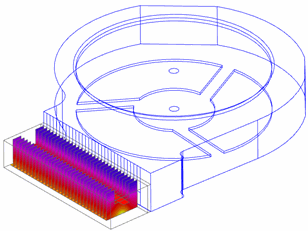

You define a Flow Surface simulation object to model:
3D obstructions in a fluid volume using a simplified 2D geometry representation of the original part.
Specific wall function characteristics.
Specific convection properties.
A rotating or translating surface in shear (moving wall).
For the selected faces, a Flow Surface overrides the default Friction and Convection Parameters options on the 3D Flow tab in the Solution dialog box.
When you solve the model, the solver:
Establishes heat paths (conductances) from the surfaces and obstructions to adjacent 3D fluid elements.
Opens the 3D flow mesh at the embedded Flow Surface, and models friction on both sides of the Flow Surface.
|

|